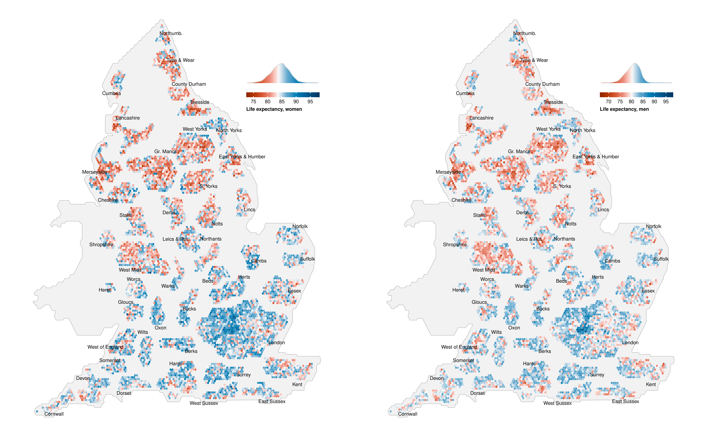

Appendix C — Hex-cartogram of life expectancy in 2019 at the MSOA level
This is an alternative version of Figure 4.2, using a hexagon-based cartogram where every MSOA has equal size. Hence, London, which has a lot of small MSOAs, takes up a larger proportion of the map. For an interactive version of the original figure, see the visualisation.
